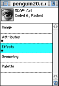

Opening files
You can use 3DO PostPro to open Photoshop files and 3DO images or cels.
Follow these steps to open a file:
- Launch 3DO PostPro. A blank Workbench is automatically displayed.
- From the File menu, choose Open.
- Select the file you want to open from the Open dialog. The Document Window for the file appears (see Figure 1).

Figure 1: Document Window for a coded-6, packed cel.
- Drag the Document Proxy from the Document Window to the Workbench.
The document appears on the Workbench and the television monitor
simultaneously. Figure 2 shows the file displayed on the Workbench.

Figure 2: Document displayed on Workbench.
The number in the lower-left corner of the cel (1) on the Workbench shows the order of the cel-when you display more than one cel at a time.
Displaying multiple cels and reordering them is discussed in Displaying and layering multiple cels.